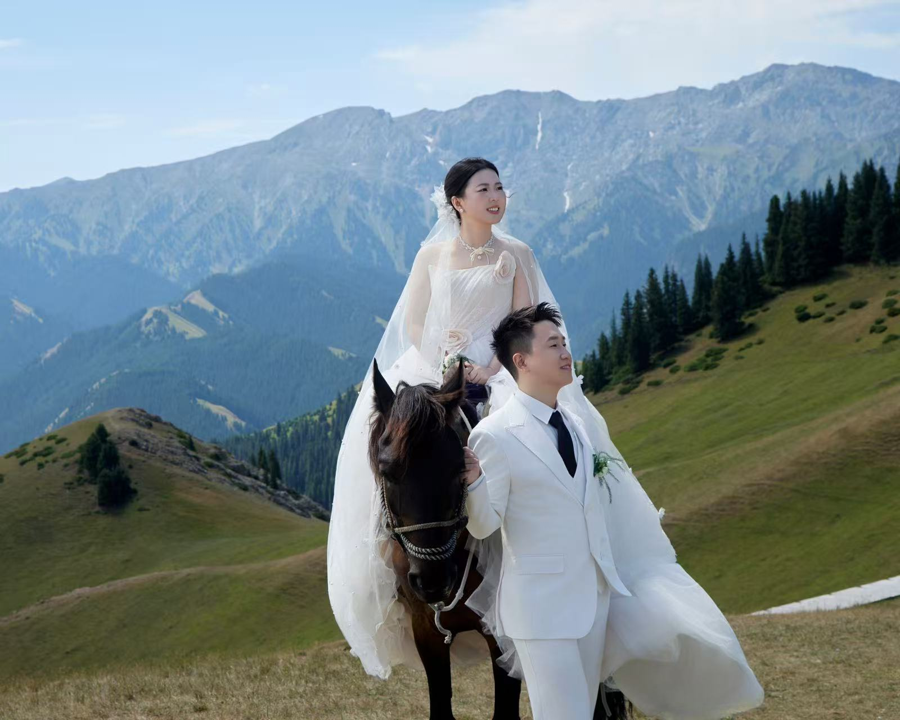
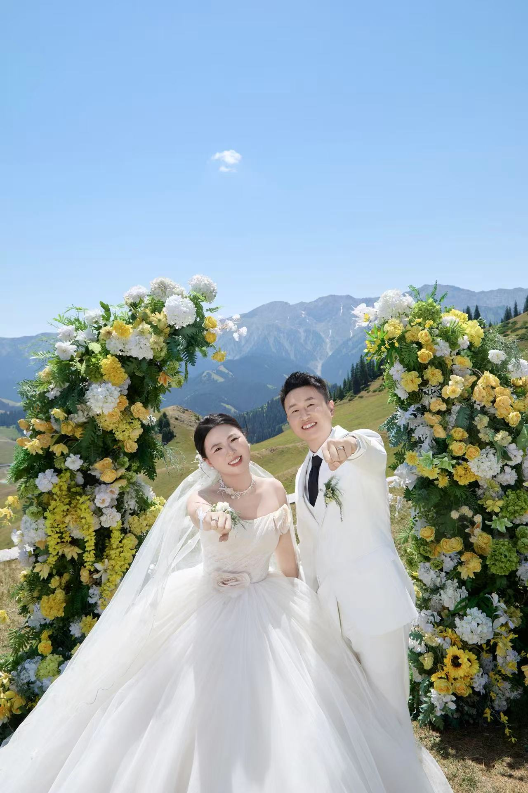
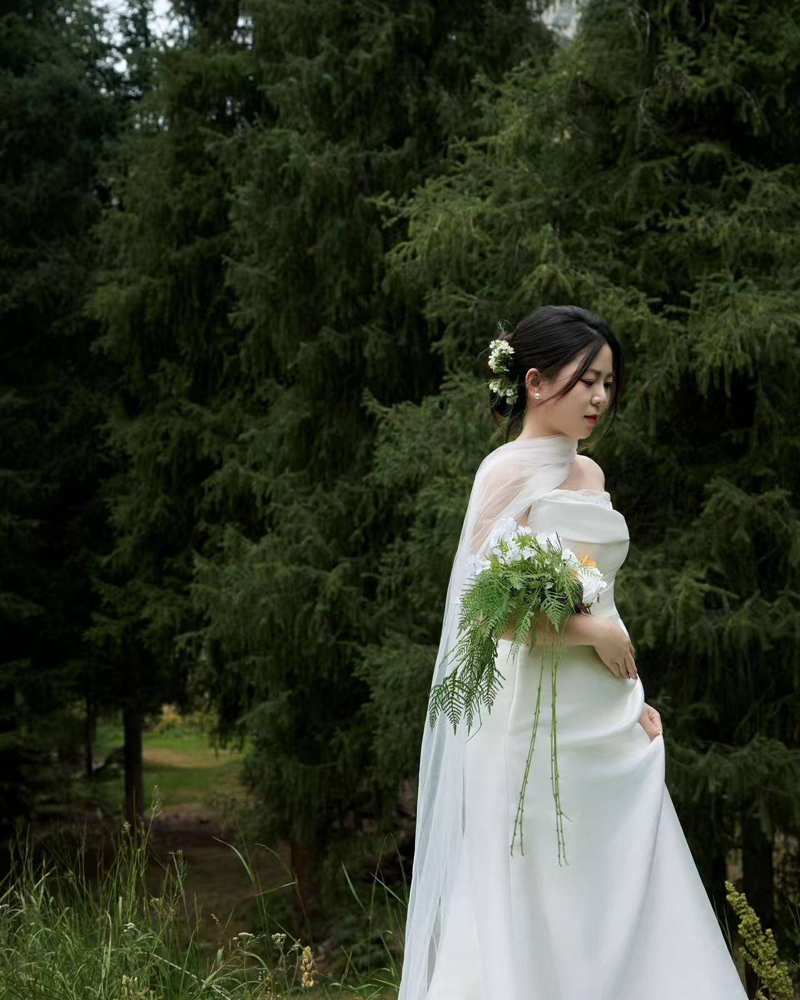
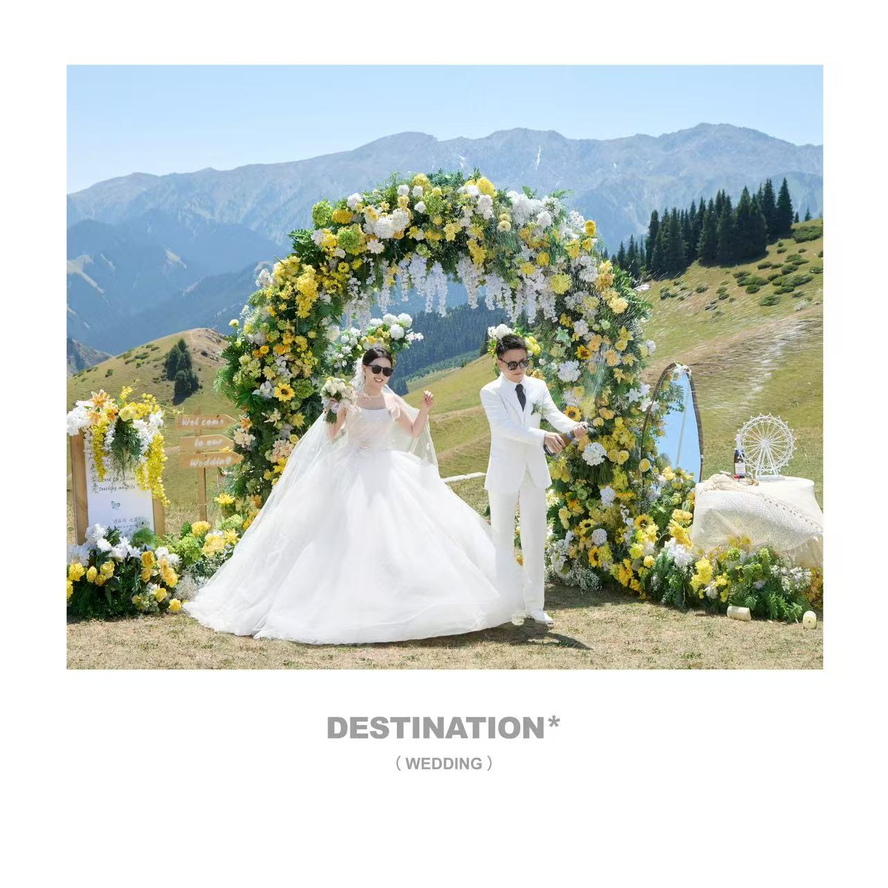
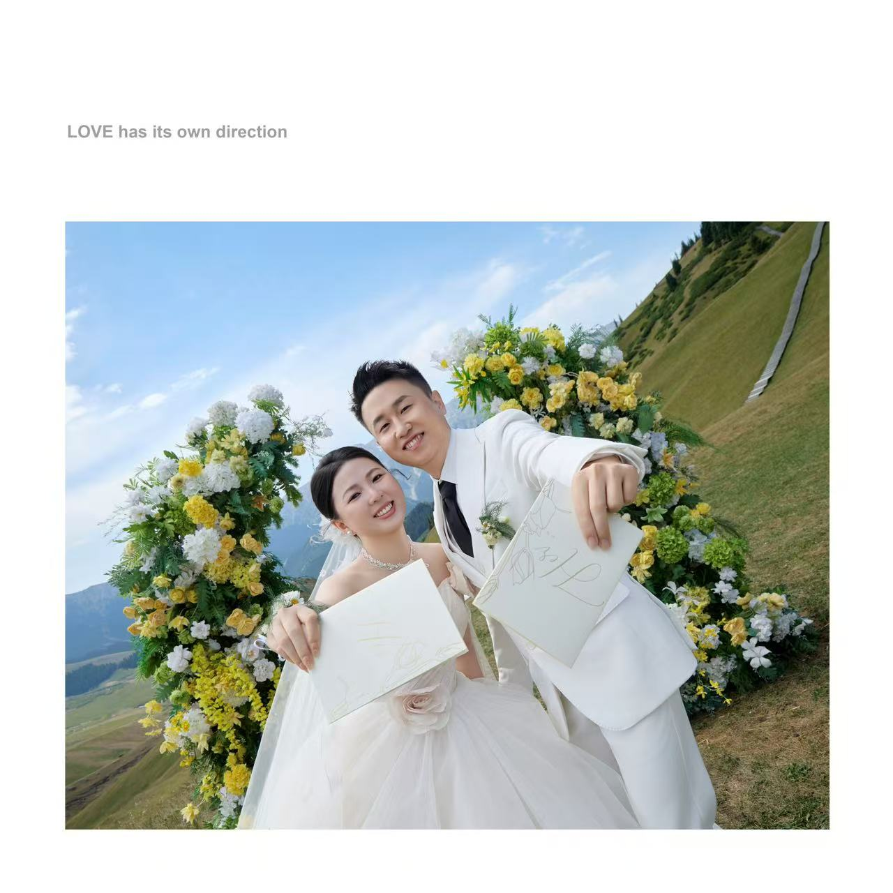
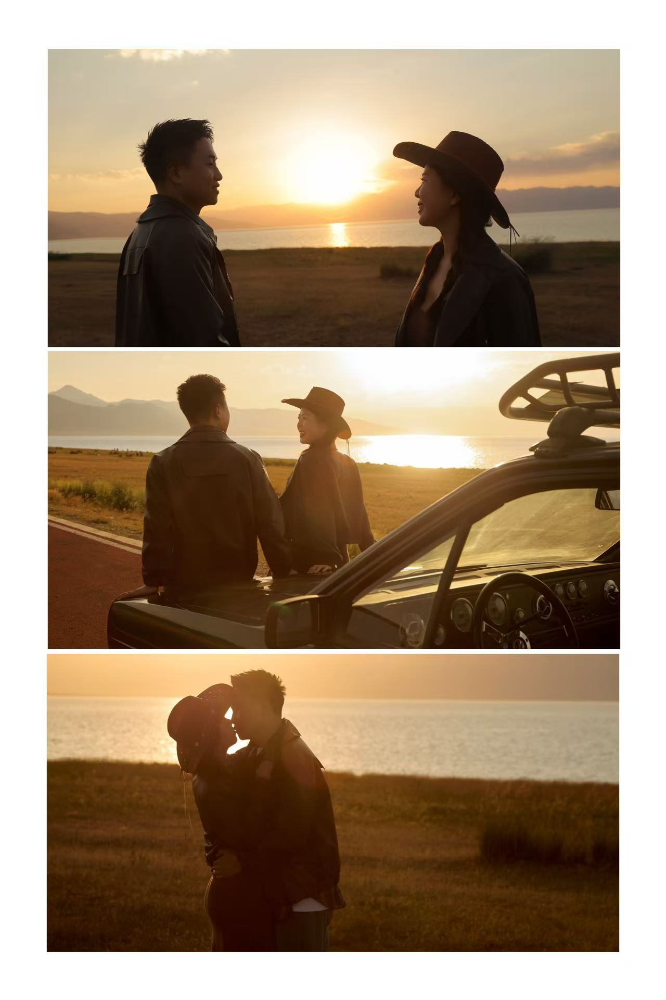

OUR DAY · 2026.10.01
顾振刚 & 赵国艳
结婚喜宴 · 敬候光临
LOVE IS A JOURNEY
从此，故事有了我们
感谢你们一路以来的陪伴与祝福。我们想把这份喜悦，认真地分享给每一位重要的人，邀请你来见证我们的新篇章。
--天
--时
--分
--秒
OUR MEMORIES我们一起走过的路





THE CEREMONY婚礼信息
喜宴时间
2026年10月1日
上午 10:18
上午 10:18
农历丙午年八月廿一 · 星期四
喜宴地点
百宴廷宴会中心
（天水店）
（天水店）
瀚庭名苑二期商业 2—3 层